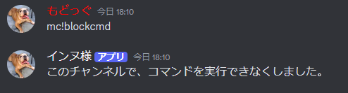
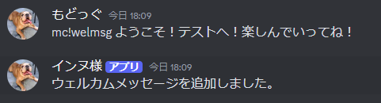

おすすめの初期設定
mc!コマンドをブロックする方法
まず、ブロックしたいチャンネルで、
「mc!blockcmd」を実行します。
これでコマンドをブロックすることが出来ました。

ウェルカムメッセージを指定する方法
まず、ウェルカムメッセージを送信したいチャンネルで、
「mc!welmsg 送信したい言葉」を入力してください。
これで自動的にウェルカムメッセージを送信してくれます。

もどる